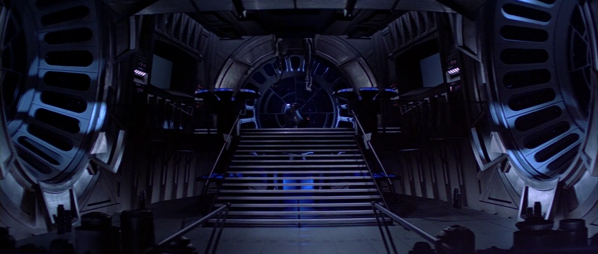

Vader brings Luke aboard the Death Star and takes him before Emperor Palpatine. The Emperor wants Luke to give in to his anger and take his father's place at his side.
Luke and Vader duel while the Rebel fleet battles outside. When Vader threatens Leia, Luke gives in to his anger and overpowers his father. For a moment, Luke stands on the edge of the dark side.
But Luke refuses to become like Vader. He throws away his lightsaber and declares himself a Jedi.
Furious, the Emperor attacks Luke with Force lightning. Luke is defenseless as Vader watches his son suffer.
Luke cries out for his father.
Vader looks at his son. Then back at his master.